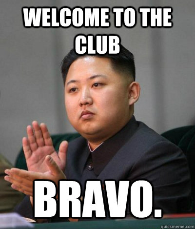
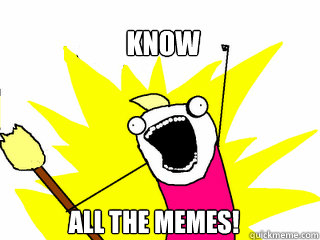
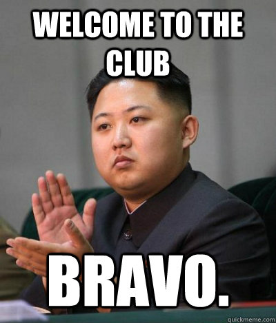
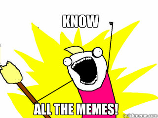
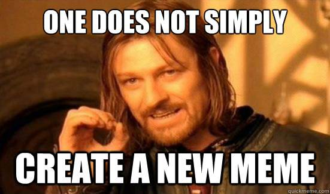
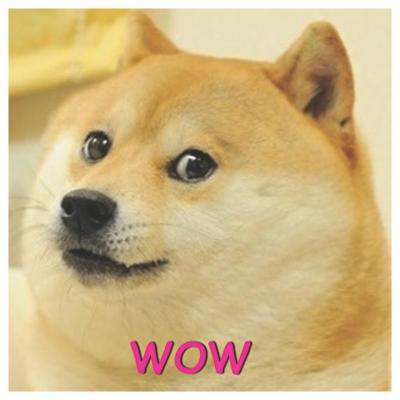

Memes have been the pinnacle of internet for the past decade, they are presented in a multitude of medias, ranging from simple picture text, to short videos or gifs.
The term meme, is a relatively new word, having been coined in the late 90's and is older than the world-wide web itself. The term was originally coined from the Greek word mimeme, meme for short. Dawkins was an evolutionary biologist and the term was originally meant for the concept that ideas evolve and change like genes and organisms themselves, and hence the term meme was born.
The history of memes, while short, still contain memes that are considered "classic" or "timeless", here are a couple.
 Fast forwarding to more recent memes we have all kinds of new, fresh memes. They can be found all over the internet. However, memes, especially the newer ones may be offensive to some, viewer discretion is advised.
 Return to Top
Return to Top